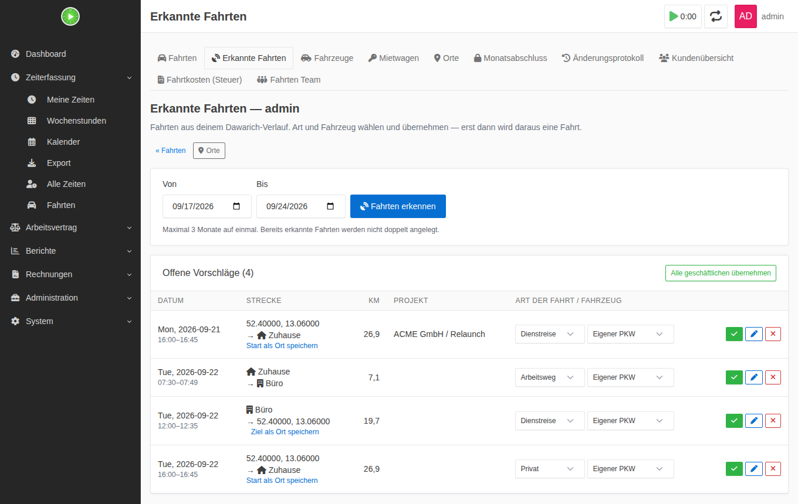
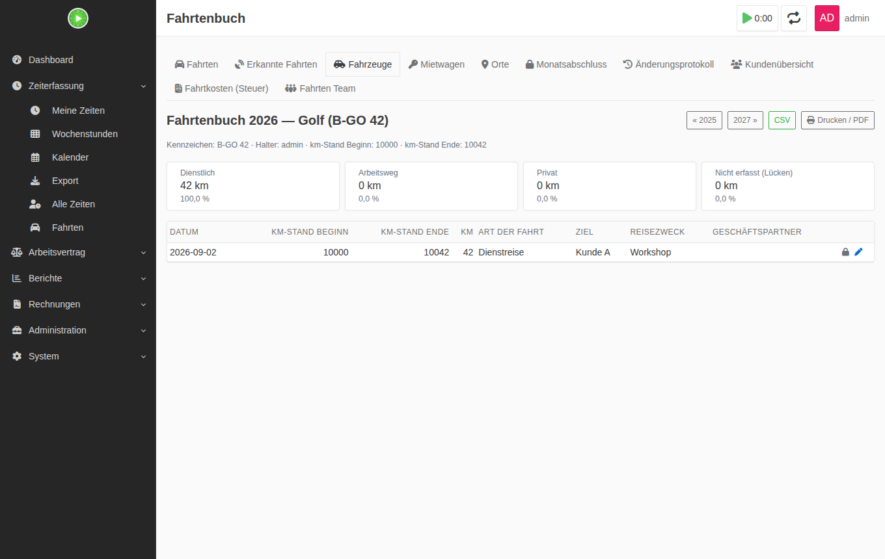
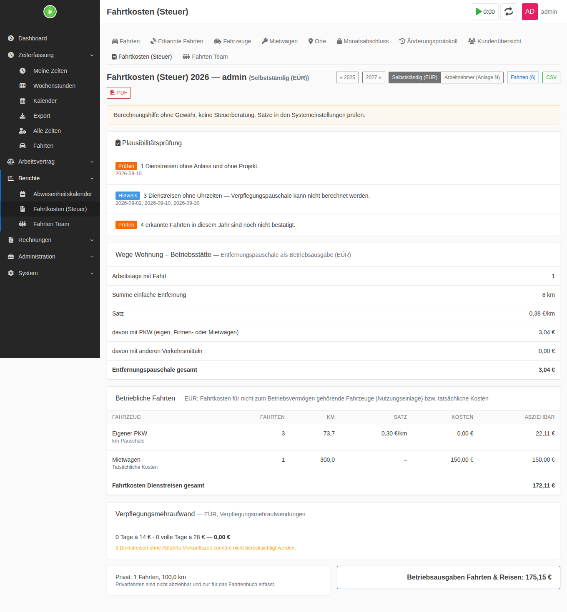
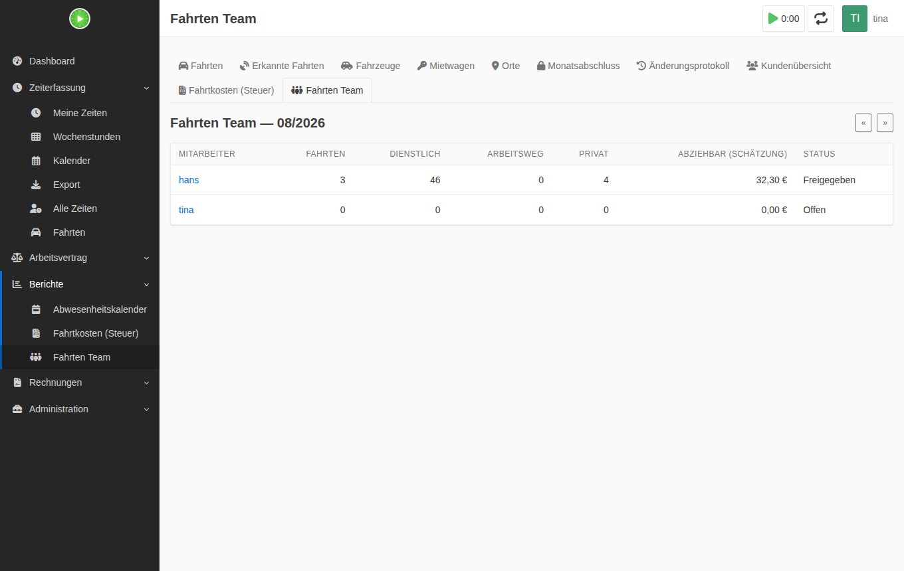

Log every trip
Jede Fahrt erfassen
Type, vehicle, plate, start and destination, km, return trip, overnight stay, costs, project and reason. Log a trip right from a timesheet entry, or create commutes from days with working time.
Art, Fahrzeug, Kennzeichen, Start und Ziel, km, Hin- und Rückfahrt, Übernachtung, Kosten, Projekt und Anlass. Eine Fahrt direkt am Zeiteintrag erfassen oder Arbeitswege aus Tagen mit Arbeitszeit erzeugen.
Trips detected for you
Fahrten werden erkannt
Stops and movements in your Dawarich history become trip suggestions. Home to office is suggested as a commute, trips around a customer’s timesheet entry as a business trip with project.
Stopps und Bewegungen aus deinem Dawarich-Verlauf werden zu Fahrtvorschlägen. Zuhause ↔ Büro wird als Arbeitsweg vorgeschlagen, Fahrten rund um einen Zeiteintrag beim Kunden als Dienstreise mit Projekt.
Logbook per vehicle
Fahrtenbuch pro Fahrzeug
Vehicles with plate, owner, odometer and usage period. The logbook checks for odometer gaps and missing details, and exports as CSV or print/PDF.
Fahrzeuge mit Kennzeichen, Halter, km-Stand und Nutzungszeitraum. Das Fahrtenbuch prüft auf km-Stand-Lücken und fehlende Angaben und lässt sich als CSV oder Druck/PDF ausgeben.
Rental cars split by km
Mietwagen nach km verteilt
Rental and fuel costs are spread over all rental trips in the period by km. Only the share of business trips is deductible.
Miet- und Tankkosten werden auf alle Mietwagen-Fahrten im Zeitraum nach km verteilt. Abziehbar ist nur der Anteil der Dienstreisen.
Yearly tax summary
Jährliche Steueraufstellung
Commuting allowance with the rates of each year, business trip costs, meal allowance and private use of business vehicles, in the browser and as PDF, with a plausibility check.
Entfernungspauschale mit den Sätzen des jeweiligen Jahres, Dienstreisekosten, Verpflegungsmehraufwand und Privatnutzung betrieblicher Fahrzeuge, im Browser und als PDF, mit Plausibilitätsprüfung.
Month closing and approval
Monatsabschluss und Freigabe
Close a month so it only changes with a special permission, with a change log for every trip. Optionally, team leads approve or reject a submitted month with a reason.
Einen Monat abschließen, damit er sich nur mit Sonderrecht ändert, mit Änderungsprotokoll für jede Fahrt. Optional geben Teamleitungen einen eingereichten Monat frei oder weisen ihn mit Begründung zurück.
Confirm instead of typing
Bestätigen statt abtippen
Dawarich keeps your location history. The plugin reads it, separates stops from movements and puts every trip into an inbox. Pick type and vehicle, then accept, edit or dismiss. Nothing becomes a trip until you accept it.
Dawarich speichert deinen Standortverlauf. Das Plugin liest ihn, trennt Stopps von Bewegungen und legt jede Fahrt in einen Eingang. Art und Fahrzeug wählen, dann übernehmen, bearbeiten oder verwerfen. Erst dann wird daraus eine Fahrt.
- Walks, runs and bike rides are left out using Dawarich’s transport mode; for train, bus or motorcycle the matching vehicle is suggested
- Places (home, work, customer) set up by hand or taken from Dawarich areas, with optional address lookup via Nominatim or Photon
- Measure the distance for a time window from GPS points, with a map preview of the route
- A nightly cron job detects the trips of the last two days for everyone with Dawarich access
- Fuß-, Lauf- und Radwege fallen über den Transportmodus von Dawarich heraus; bei Bahn, Bus oder Motorrad wird das passende Verkehrsmittel vorgeschlagen
- Orte (Zuhause, Arbeit, Kunde) von Hand anlegen oder aus Dawarich-Areas übernehmen, optional mit Adressauflösung über Nominatim oder Photon
- Die Strecke für ein Zeitfenster aus GPS-Punkten messen, mit Kartenvorschau der Route
- Ein nächtlicher Cronjob erkennt die Fahrten der letzten zwei Tage für alle mit Dawarich-Zugang

A logbook per vehicle
Ein Fahrtenbuch pro Fahrzeug
For the logbook method, every vehicle gets its own book per year. The plugin checks the odometer for gaps, points out missing details and keeps a change log for every trip, so later edits stay traceable.
Für die Fahrtenbuchmethode bekommt jedes Fahrzeug ein eigenes Buch pro Jahr. Das Plugin prüft den km-Stand auf Lücken, weist auf fehlende Angaben hin und führt für jede Fahrt ein Änderungsprotokoll, damit spätere Änderungen nachvollziehbar bleiben.
- Company car, business asset, 1 % rule or logbook method per vehicle
- Receipts (PDF, photos) attached to trips and rentals
- CSV and print/PDF per vehicle and year
- Firmenwagen, Betriebsvermögen, 1-%-Regel oder Fahrtenbuchmethode pro Fahrzeug
- Belege (PDF, Fotos) zu Fahrten und Mietvorgängen
- CSV und Druck/PDF pro Fahrzeug und Jahr

The numbers for your tax return
Die Zahlen für die Steuererklärung
Each user picks a tax profile: self-employed (business expenses, EÜR) or employee (income-related expenses, Anlage N). The yearly report adds up what you can claim and flags what looks wrong.
Jeder Nutzer wählt ein Steuerprofil: selbstständig (Betriebsausgaben, EÜR) oder Arbeitnehmer (Werbungskosten, Anlage N). Der Jahresbericht rechnet zusammen, was du ansetzen kannst, und markiert, was nicht stimmig aussieht.
- Commuting allowance with each year’s rates: up to 2025 €0.30, from km 21 €0.38; from 2026 €0.38 from the first km; once per day, €4,500 cap without a car
- Business trips: own car €0.30/km, motorcycle €0.20/km, otherwise actual costs
- Meal allowance (€14/€28), including multi-day trips and the three-month rule
- Self-employed: private use of business vehicles (1 % rule with EV and hybrid factor, 0.03 % home–work surcharge, or share from the logbook)
- Plausibility check: commutes without working time, on weekends, on vacation or sick days (with the Working Hours & Holidays plugin), missing details, open months
- Customer overview: business trips per customer with km and costs, to put on an invoice
- Entfernungspauschale mit den Sätzen des jeweiligen Jahres: bis 2025 0,30 €, ab km 21 0,38 €; ab 2026 0,38 € ab dem ersten km; einmal pro Tag, 4.500-€-Deckel ohne PKW
- Dienstreisen: eigener PKW 0,30 €/km, Motorrad 0,20 €/km, sonst tatsächliche Kosten
- Verpflegungsmehraufwand (14 €/28 €), inklusive mehrtägiger Reisen und Dreimonatsfrist
- Selbstständige: Privatnutzung betrieblicher Fahrzeuge (1-%-Regel mit E-Auto- und Hybrid-Faktor, 0,03-%-Zuschlag Wohnung–Betrieb, oder Anteil nach Fahrtenbuch)
- Plausibilitätsprüfung: Arbeitswege ohne Arbeitszeit, am Wochenende, an Urlaubs- oder Krankheitstagen (mit dem Plugin Arbeitszeiten & Feiertage), fehlende Angaben, offene Monate
- Kundenübersicht: Dienstreisen je Kunde mit km und Kosten, zum Übertragen in eine Rechnung

Approval by the team lead
Freigabe durch die Teamleitung
If you switch it on, employees submit a month and their team lead approves it or sends it back with a reason. The team report shows trips, business km, commutes and the estimated deductible amount per person.
Wenn du es einschaltest, reichen Mitarbeiter einen Monat ein, und die Teamleitung gibt ihn frei oder schickt ihn mit Begründung zurück. Der Teambericht zeigt Fahrten, dienstliche km, Arbeitswege und den geschätzt abziehbaren Betrag pro Person.
- Team leads only see members of their own teams
- Approval is off by default and switched on under System → Settings
- Teamleitungen sehen nur ihre eigenen Teammitglieder
- Die Freigabe ist standardmäßig aus und wird unter System → Einstellungen eingeschaltet

How it works
So funktioniert es
The plugin adds its own Fahrten section to the Kimai sidebar, right under time tracking. It reads your timesheets to match trips to projects and working days, and keeps trips, vehicles and places in its own tables.
Das Plugin bringt einen eigenen Bereich Fahrten in die Kimai-Seitenleiste, direkt unter der Zeiterfassung. Es liest deine Zeiteinträge, um Fahrten Projekten und Arbeitstagen zuzuordnen, und hält Fahrten, Fahrzeuge und Orte in eigenen Tabellen.
- CSV import detects delimiter, encoding and German or English columns, including its own export
- A REST API under Kimai’s
/apifor trips, vehicles, suggestions and the yearly summary; Plasmai uses it for trips in the panel - A phone shortcut “commute today” is one
POSTwith{"purpose": "commute"}
- Der CSV-Import erkennt Trennzeichen, Zeichensatz und deutsche oder englische Spalten, auch den eigenen Export
- Eine REST-API unter Kimais
/apifür Fahrten, Fahrzeuge, Vorschläge und die Jahreszusammenfassung; Plasmai nutzt sie für Fahrten im Panel - Ein Handy-Kurzbefehl „Arbeitsweg heute“ ist ein
POSTmit{"purpose": "commute"}
Install
Installation
- Clone the plugin into
var/plugins/MileageBundle; the folder name must stayMileageBundle. - Run
bin/console kimai:reload -nandbin/console kimai:bundle:mileage:install. The install command creates the tables and copies the map library (Leaflet). - Check the permissions under System → Roles, section Fahrten.
- Under Profile → Settings, set your tax profile, home and work address, distance, default vehicle and, if you use it, the Dawarich URL and API key.
- Optionally add vehicles, take over places from Dawarich areas and schedule the detection:
0 3 * * * bin/console kimai:bundle:mileage:suggest.
- Klone das Plugin nach
var/plugins/MileageBundle; der Ordnername mussMileageBundlebleiben. - Führe
bin/console kimai:reload -nundbin/console kimai:bundle:mileage:installaus. Der Installationsbefehl legt die Tabellen an und kopiert die Kartenbibliothek (Leaflet). - Prüfe die Rechte unter System → Rollen, Abschnitt Fahrten.
- Unter Profil → Einstellungen Steuerprofil, Wohn- und Arbeitsadresse, Entfernung, Standardfahrzeug und, falls genutzt, Dawarich-URL und API-Key eintragen.
- Optional Fahrzeuge anlegen, Orte aus Dawarich-Areas übernehmen und die Erkennung einplanen:
0 3 * * * bin/console kimai:bundle:mileage:suggest.
The official Kimai Docker image has no cron, so schedule the command on the host with docker exec. Rates, geocoding server, map tiles, team approval and detection sensitivity are set under System → Settings.
Das offizielle Kimai-Docker-Image hat keinen Cron, plane den Befehl also auf dem Host mit docker exec ein. Sätze, Geocoding-Server, Kartenkacheln, Freigabe durch die Teamleitung und Empfindlichkeit der Erkennung stellst du unter System → Einstellungen ein.
Permissions
Rechte
| PermissionRecht | PurposeZweck | DefaultStandard |
|---|---|---|
mileage | Trips, reports, settingsFahrten, Berichte, Einstellungen | everyonealle |
edit_own_mileage / delete_own_mileage | Own tripsEigene Fahrten | everyonealle |
lock_mileage | Close or submit own monthsEigene Monate abschließen oder einreichen | everyonealle |
view_team_mileage / approve_mileage | See and approve team membersTeammitglieder sehen und freigeben | team leadTeamleitung |
view_other_mileage / edit_other_mileage / delete_other_mileage / approve_other_mileage | All usersAlle Nutzer | Admin |
unlock_mileage / edit_locked_mileage | Reopen months, change closed monthsMonate wieder öffnen, in abgeschlossenen Monaten ändern | Admin |
Questions
Fragen
Do I need Dawarich?Brauche ich Dawarich?
No. Without it you log trips by hand, from a timesheet entry, by CSV import or through the API. Dawarich only adds the automatic detection and the distance from GPS.
Nein. Ohne Dawarich erfasst du Fahrten von Hand, am Zeiteintrag, per CSV-Import oder über die API. Dawarich bringt nur die automatische Erkennung und die Strecke aus GPS dazu.
Is this tax advice?Ist das eine Steuerberatung?
No. It is a calculation aid without guarantee. The rates follow German tax law as of 2026 and can be changed in the settings. Check the result before you file it.
Nein. Es ist eine Berechnungshilfe ohne Gewähr. Die Sätze folgen dem deutschen Steuerrecht mit Stand 2026 und lassen sich in den Einstellungen ändern. Prüfe das Ergebnis, bevor du es einreichst.
Does my location history leave my server?Verlässt mein Standortverlauf meinen Server?
The plugin talks to your own Dawarich instance. Only if you turn on address lookup does it ask a geocoding server (Nominatim or Photon, which you can host yourself), and map tiles are loaded only if a tile server is set.
Das Plugin spricht mit deiner eigenen Dawarich-Instanz. Nur wenn du die Adressauflösung einschaltest, fragt es einen Geocoding-Server (Nominatim oder Photon, beide selbst hostbar), und Kartenkacheln werden nur geladen, wenn ein Kachel-Server eingetragen ist.
Why is it called MileageBundle in Kimai?Warum heißt es in Kimai MileageBundle?
MileageBundle is the technical plugin ID, and the folder under var/plugins must use it. The project and the menu are called Anfahrten and Fahrten.
MileageBundle ist die technische Plugin-ID, und der Ordner unter var/plugins muss so heißen. Das Projekt und das Menü heißen Anfahrten bzw. Fahrten.